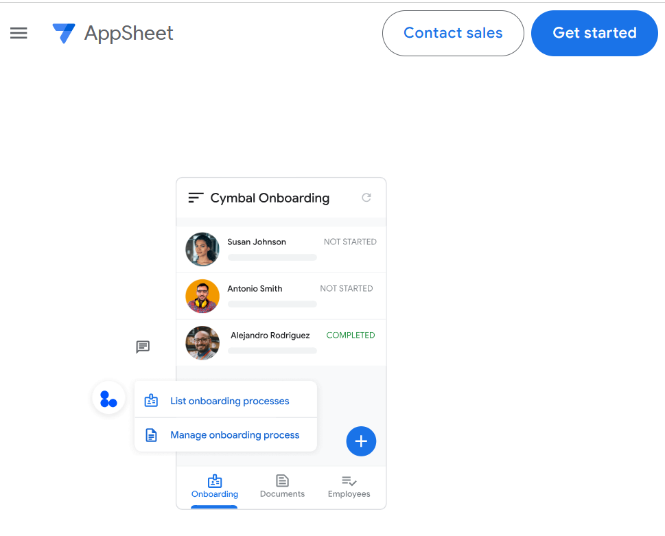
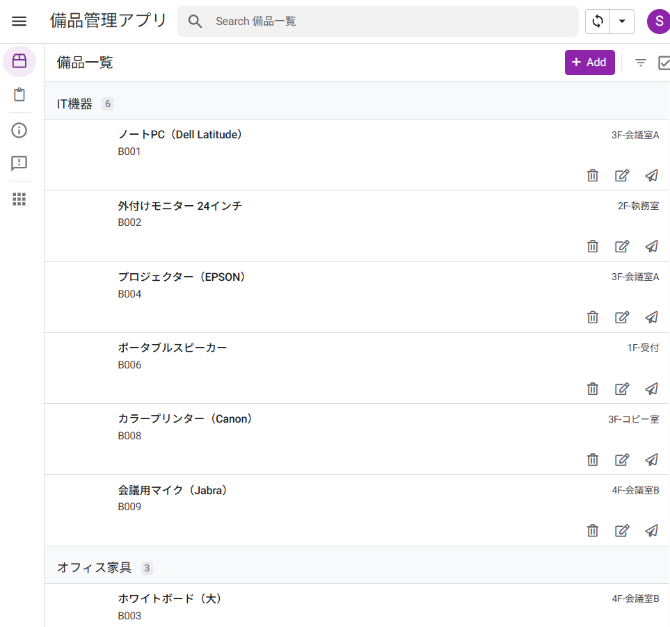
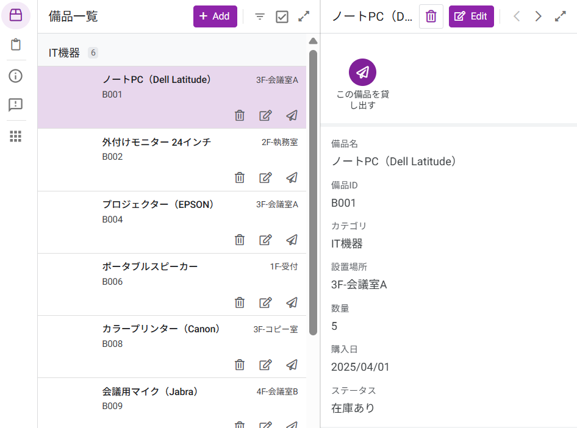
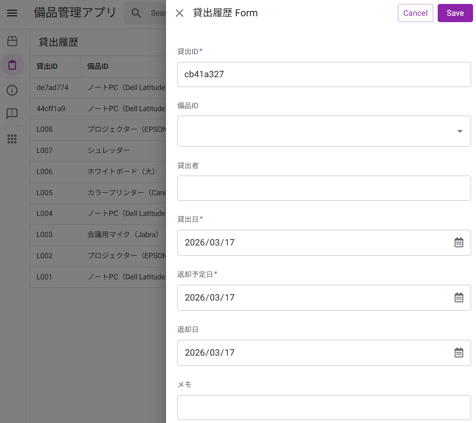
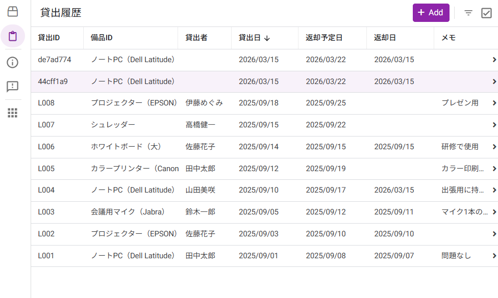

AppSheetを知ろう
📁 練習用ファイル（ダウンロード）
-
1
クリックすると Google ドライブにコピーが作成されます。そのまま初級編の教材として使用してください。
-
2
初級編の完成版アプリです。迷ったときに参照してください。リンクをクリックするとブラウザで開きます。
1-1 AppSheetとは？ ─ ノーコードツールの世界へようこそ
AppSheet は、Google が提供するノーコード（プログラミング不要）のアプリ開発プラットフォームです。 普段使っている Google スプレッドシートや Excel のデータをもとに、スマートフォンやPCで動く業務アプリを作成できます。
データ
または Excel
設定
ノーコードで構成
完成！
どこからでも利用可能
従来、業務アプリを作るためにはプログラミングの知識が必要でしたが、AppSheet では画面上の設定操作だけでアプリを構築できます。 イメージとしては、Excel でデータ管理をしていたものを、そのまま「見やすく・使いやすいアプリ」に変換するツールです。
従来の開発との違い
従来のアプリ開発
- プログラミング言語の習得が必要
- 開発に数週間～数か月
- 専門のエンジニアに依頼
- 修正のたびに開発コストが発生
AppSheet で作る場合
- プログラミング知識は不要
- 数時間〜数日で完成
- 現場の担当者が自分で作れる
- 修正・改善も自分ですぐ対応

1-2 AppSheetでできること・できないこと
AppSheet は非常に多機能ですが、万能ではありません。 まずは「何ができて、何ができないのか」を理解しておくことで、最適な活用場面がわかります。
■ できること一覧
| No. | 機能 | 内容 | 対応 |
|---|---|---|---|
| 1 | データの一覧表示 | スプレッドシートの内容をリスト・カード・ギャラリー形式で表示 | ○ |
| 2 | データの追加・編集・削除 | フォーム画面からデータを登録・更新できる | ○ |
| 3 | 写真の撮影・添付 | スマートフォンで写真を撮ってデータに紐づけ | ○ |
| 4 | フィルター・検索 | 条件を指定してデータを絞り込み検索 | ○ |
| 5 | 通知メール送信 | 特定の条件でメールやプッシュ通知を自動送信 | ○ |
| 6 | グラフ表示 | データをグラフで可視化 | ○ |
| 7 | PDF帳票の自動生成 | テンプレートからPDFを自動生成 | ○ |
| 8 | ユーザー権限の管理 | 閲覧のみ・編集可能などの権限を設定 | ○ |
■ できないこと・苦手なこと
| No. | 内容 | 補足 | 対応 |
|---|---|---|---|
| 1 | 複雑なUIデザインのカスタマイズ | 画面デザインの自由度には限界があります | ✕ |
| 2 | 大規模データの高速処理 | 数万行を超えるデータには不向きです | ✕ |
| 3 | 外部APIとの複雑な連携 | 簡単な連携は可能ですが高度な処理は困難です | △ |
| 4 | 一般消費者向けアプリの公開 | App Store / Google Play への公開は非対応です | ✕ |
1-3 今回作るアプリの完成イメージ
このマニュアルでは、全7章を通して 「備品管理アプリ」 を1本完成させます。 まずは完成形のイメージを確認しておきましょう。ゴールが見えていると、各ステップの作業が理解しやすくなります。
■ アプリの概要
アプリ名：備品管理アプリ
目的：社内の備品（PC、モニター、椅子など）の在庫状況と貸出履歴を管理する
使用場面：総務部が備品の一覧を管理し、各社員がスマートフォンから貸出申請を行う
データソース：Google スプレッドシート（2シート構成）
■ 完成画面イメージ（4画面）




■ 使用するデータ構成
アプリでは 2つのテーブル（シート） を使用します。この2つが「備品」と「貸出履歴」を紐づける構造になっています。
テーブル① ：備品一覧
| 備品ID | 備品名 | カテゴリ | 設置場所 | 数量 | 購入日 | 画像 | ステータス |
|---|---|---|---|---|---|---|---|
| B001 | ノートPC | IT機器 | 3F-会議室A | 5 | 2025/04/01 | (画像) | 使用中 |
| B002 | モニター | IT機器 | 2F-執務室 | 10 | 2025/06/15 | (画像) | 在庫あり |
| B003 | ホワイトボード | オフィス家具 | 4F-会議室B | 2 | 2024/11/20 | (画像) | 在庫あり |
テーブル② ：貸出履歴
| 貸出ID | 備品ID | 貸出者 | 貸出日 | 返却予定日 | 返却日 | メモ |
|---|---|---|---|---|---|---|
| L001 | B001 | 山田太郎 | 2025/10/01 | 2025/10/15 | 2025/10/14 | プロジェクトA用 |
| L002 | B001 | 佐藤花子 | 2025/11/01 | 2025/11/30 | ─ | 在宅勤務用 |
1-4 全体の作成フロー ─ 5ステップで完成！
備品管理アプリは、以下の 5つのステップ で完成します。 各ステップがこのマニュアルの第2章～第6章に対応しています。全体の流れを頭に入れてから作り始めましょう。
準備する 第2章
自動生成する 第3章
整える 第4章
追加する 第5章
公開する 第6章
■ 各ステップの詳細
| STEP | 対応章 | 作業内容 | 所要時間 |
|---|---|---|---|
| STEP 1 | 第2章：準備編 | Google スプレッドシートにサンプルデータを入力し、AppSheet にアクセスする | 約20分 |
| STEP 2 | 第3章：構築編 | スプレッドシートからアプリを自動生成し、カラムの型やテーブルのリレーションを設定する | 約40分 |
| STEP 3 | 第4章：UX編 | 一覧画面・詳細画面・入力フォームのレイアウトを整え、ナビゲーションを設定する | 約40分 |
| STEP 4 | 第5章：機能追加 | スライスやアクションボタン、条件付き書式、グラフを追加して実用性を高める | 約30分 |
| STEP 5 | 第6章：公開編 | デプロイチェックを実施し、アプリを共有・公開する | 約15分 |
以上で第1章は終了です。AppSheet の概要と、これから作るアプリの全体像がつかめたでしょうか。
次の第2章では、いよいよ実際に手を動かして、アプリの土台となるデータを準備していきます。